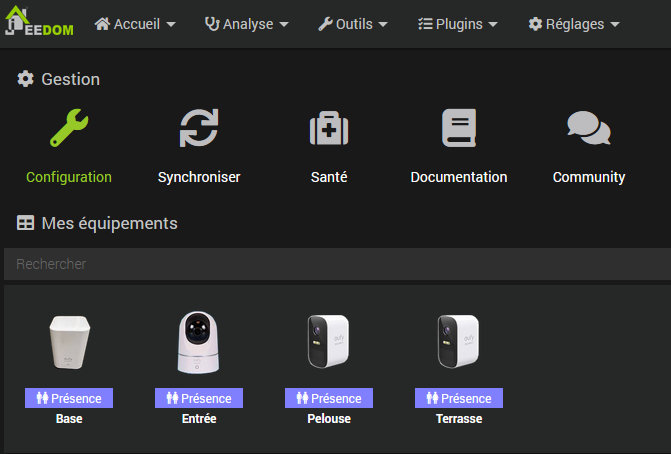

Installer le plugin et ses dépendances. Vous avez le choix entre les modes local et distant pour docker ou lxc.
Note:
* L'installation des dépendances n'installe PAS l'image eufy-security-ws.
eufy-security-ws, localhost:3000 par défaut60600 par défaut. Ne changez pas cette valeur sauf si vous avez un conflit avec un autre plugineufy-security-ws et sa connexion au service Cloud EufyNotes:
- Le daemon Eufy ne démarrera pas si le container eufy-security-ws ne peut pas se connecter au service Cloud Eufy.
- La version d'image installée (si elle existe) est indiquée dans le champ Version installée

L'installation du mode local a pour prérequis les modules docker. Ils sont maintenant installés et configurés automatiquement.
Le plugin ne nécessite pas l'utilisation du #plugin-docker2 mais il est possible d'importer le fichier généré data/docker-compose.yml si vous préférez gérer l'image vous même avec ce plugin.
Paramètres supplémentaires:
- Device: nom de votre téléphone dans l'app Eufy, utilisé pour se connecter au serveur Cloud Eufy
- Utilisateur et mot de passe: il est conseillé de créer un utilisateur dédié
- Version cible: latest par défaut ou la version que vous souhaitez
Configuration de l'image docker post-installation:
eufy-security-wseufy-security-ws (à relancer si vous changez les paramètres du container)eufy-security-wseufy-security-ws avec la version demandéeRéseau mode host: Mode réseau docker bridge (défaut) ou host. A modifier si vous rencontrez des problèmes de connectivité
Une fois les dépendances installées vous pouvez aussi utiliser le script eufy disponible dans resources
pour installer, vérifier et gérer l'image eufy-security-ws et tester vos caméras en ligne de commande:
$ ./eufy
usage: eufy [-h] [-d device] [-u url] action
-h show this help message and exit
action: { install|uninstall|upgrade|start|stop|restart|status|info|logs|test }
test optional arguments:
-d DEVICE device serial number
-u URL eufy service URL, default 127.0.0.1:3000
eufy status # check the image and container status
eufy info # check the image and container status (extended info)
eufy test # check if the container is connected to the eufy cloud
eufy logs # get the container logs

A utiliser si vous avez déployé l'image eufy-security-ws sur un docker ou un lxc distant.
Voici les fichiers à adapter et copier sur le serveur distant:
resources/docker-compose.yml
resources/eufy

Détection et création automatique des devices.
Note:
Seuls certains modèles ont été testés. La liste complète des modèles susceptibles de fonctionner est disponible ici.
Si votre modèle est dans cette liste et ne fonctionne pas comme prévu vous pouvez m'envoyer le résutat de la commande eufy test. Voir Devices ou commandes non supportées pour plus d'infos.
Mise à jour des valeurs de tous les devices actifs. Vous pouvez également mettre à jour chaque device avec la comande Rafraichir

Liste et statut des devices actifs.

Les commandes sont réparties entre les catégories Station et Caméra.
L'image du device peut être modifiée si nécessaire.
L'onglet Autres commandes regroupe la présence, la commande Rafraichir et les commandes supplémentaires.
Les commandes supplémentaires suivantes peuvent être créées:

Attention! Ces commandes peuvent fonctionner ou non selon le modèle.

Il est possible de renommer les labels des menus déroulants. Ex ici Custom1 en Alarm pour la commande guardMode. Le format est le suivant:
0|Away;1|Home;2|Schedule;3|Alarm;4|Custom 2;5|Custom 3;47|Geofencing;63|Disarmed
Attention! Ne pas modifier les valeurs.
Si mes widgets custom sont installés ils seront automatiquement appliqués: snapshot,liste déroulante, mode alarme, switch. Pour plus d'informations voir ici.


La commande Last Camera Picture contient l'URL de l'image sur le serveur
Vous pouvez utiliser mon widget ImageViewer.
Pensez à activer les notifications d'image dans les paramètres de vos devices depuis l'application Eufy sans quoi les snapshots ne seront pas mis à jour
Le flux RTSP fonctionne dans le plugin Camera ou une application comme VLC.
Il doit être activé/désactivé via les commandes de l'équipement RTSP Stream On et RTSP Stream Off.
Selon les devices le login/passwd est celui du compte Eufy ou celui généré par l'application sur la page
Paramètres > General > Stockage > NAS(RTSP)
L'IP est celle de la base ou celle de la caméra
live0..liven indiquent le numéro de la caméra, cf ce screenshot:

Voir ici et la selon votre modèle
Pour le mode local les prérequis docker sont installés automatiquement avec le bouton Setup Docker > Installer. Un python_venv est également installé automatiquement pour debian 12+
L’installation de l’image Docker a échoué ou le conteneur ne démarre pas. Assurez-vous que l’image est correctement installée.
Note:
@bropat ne fournit plus d’images armv7 (Pi3), la dernière version disponible est la 1.7.1.
Cela signifie que l’authentification au cloud Eufy a échoué ou qu’Eufy empêche la connexion pour des raisons de sécurité (ex trop d'erreurs de login). Vérifiez que votre identifiant Eufy, votre mot de passe et le nom de l’appareil sont corrects.
Attention le 2FA n'est pas supporté.
Vérifiez l'état de l’image Docker, du conteneur et de la connexion au cloud (voir ci-dessous).
Si l’image Docker est correctement installée, sa version sera affichée sur la ligne installed version.
Les indicateurs d’état du conteneur et de la connexion au cloud doivent tous deux être verts (voir ci-dessous).
Utilisez le script eufy dans resources pour obtenir plus d’informations.
Consultez la section Mode local (expert) pour plus de détails.
Les apostrophes et les guillemets ne sont pas pris en charge dans les noms des équipements.
Assurez-vous d’utiliser la bonne version de l'image eufy-security-ws.
La version installée est affichée sur la page de configuration du plugin lorsque vous cliquez sur le bouton Tester.
Si vous avez mis à jour le plugin, essayez de désinstaller puis de réinstaller l’image et de redémarrer le conteneur.
Il ne s’agit pas d’actions mais de settings qui n’affectent le comportement du device qu’à la prochaine détection (ex. le flash s’allumera lors du prochain événement).
Activez les instantanés dans l’application Eufy : Appareil > Paramètres > Notification
En cas de problème vérifier la connexion avec le container via la commande eufy disponible dans resources:
$ cd /var/www/html/plugins/eufy
$ ./resources/eufy test
Vous devriez obtenir l'output suivant:
{"type":"result","success":true,"result":{"state":{"driver":{"version":"2.4.0","connected":true,"pushConnected":true}
Note: connected et pushConnected doivent être à true
Vérifiez si le device et/ou la commande existe
$ cd /var/www/html/plugins/eufy
$ ./resources/eufy -d device_serial test
Note: device_serial est l'identifiant de votre device commencant par Txxx
Consultez le forum Jeedom community